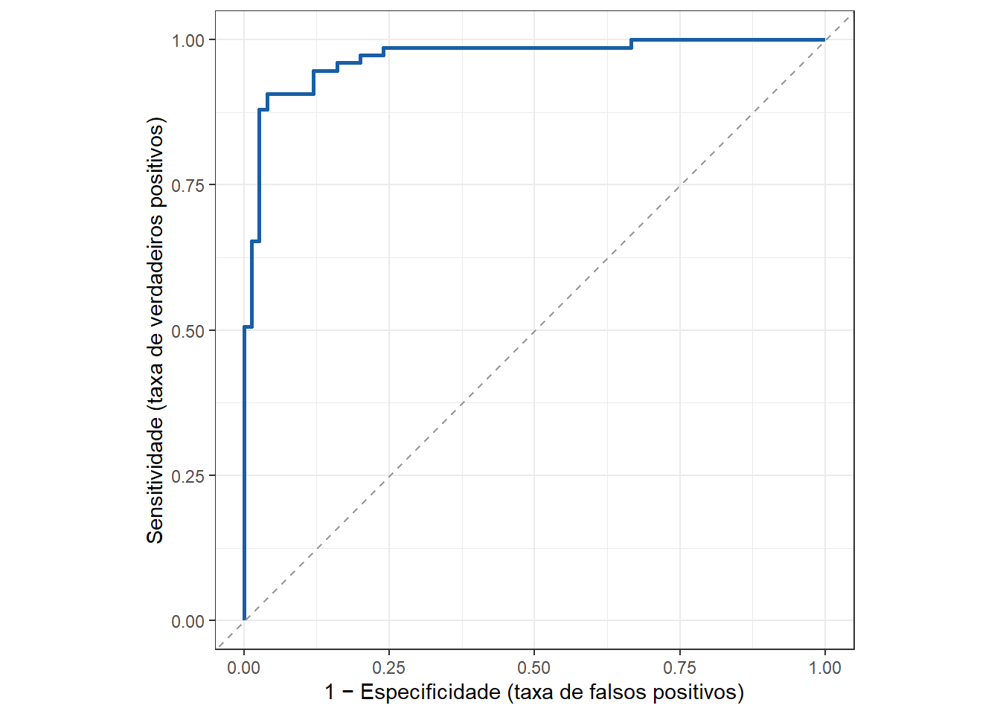

| Previsto \ Verdade | classe 1 (pos) | classe 0 (neg) |
| classe 1 (pos) | Verdadeiro Positivo (TP) | Falso Positivo (FN) |
| classe 0 (neg) | Falso Negativo (FN) | Verdadeiro Negativo (TN) |
11 Introdução à classificação
11.1 Teoria da decisão
Seja o problema de previsão de uma variável dependente ou resposta, \(y\), em função de um vetor \(k\)-dimensional de preditores, \(\mathbf{x}=[x_1,x_2,...x_k]^T\). Um problema de classificação é aquele no qual o supervisor é uma variável qualitativa ou categórica \(y \in \{c_1,c_2, ..., c_Q\}\), onde \(Q\) é o número de classes. Tomando o caso mais simples, \(Q=2\), tem-se um problema de classificação binária, \(y \in \{c_1,c_2\}\). Nestes casos, para alguns métodos, é apropriado codificar as classes em 0 e 1, \(c_1=1\) e \(c_2=0\), enquanto outros métodos adotam a codificação em -1 e 1, \(c_1=-1\) e \(c_2=+1\).
Existem diversas abordagens usadas para problemas de classificação. Alguns métodos de classificação visam estimar uma função discriminante que assinala diretamente a \(i\)-ésima observação a uma classe \(c_q\), \(q=1,..., Q\). Outros visam estimar as probabilidades condicionais, \(p(y=c_q|\mathbf{x})\), isto é, a probabilidade condicional de pertencer a uma determinada classe \(c_q\), dado uma determinada observação dos preditores, \(\mathbf{x}\). A partir de tais probabilidades a decisão é tomada. Os métodos que buscam modelar tais probabilidades ainda se dividem em duas abordagens: No primeiro caso as probabilidades condicionais, \(p(y=c_q|\mathbf{x})\), são modeladas de forma direta, por exemplo, a partir de um modelo paramétrico, sendo os parâmetros do modelo estimados a partir dos dados de treino. No segundo caso tais probabilidades são modeladas usando o teorema de Bayes para calcular a probabilidade posterior dadas uma distribuição à priori, \(p(\theta)\), e a verossimilhança ou probabilidade condicional, \(p(y=c_q|\mathbf{x})\). Para melhor entender ambas abordagens, às quais serão encontradas em métodos distintos, é essencial introduzir alguns conceitos, como o estimador de máxima verossimilhança, máximo à posteriori e o conceito de minimização empírica do erro em problemas de classificação.
11.2 Estimador de máxima verossimilhança
Seja um conjunto com \(N\) observações de treino do vetor de variáveis independentes e do supervisor, \(\mathcal{T} = (\mathbf{x}_1,y_1), ..., (\mathbf{x}_N,y_N)\). Seja \(\theta\) um hiperparâmetro do modelo a ser estimado, podendo ser escalar ou vetor, a depender do método. Assume-se que as observações de treino disponíveis foram coletadas de forma independente a partir da distribuição populacional, sendo iid, pode-se definir a função densidade conjunta para os dados conforme Equação 11.1.
\[ p(\mathcal{T}|\theta) = p(y_1|\mathbf{x}_1,\theta)p(y_2|\mathbf{x}_2,\theta)... p(y_N|\mathbf{x}_N,\theta) \tag{11.1}\]
A função de verossimilhança, \(L(\theta)\), é definida conforme Equação 14.2.
\[ L(\theta) = p(\mathcal{T}|\theta) =\prod_{i=1}^Np(y_i|\mathbf{x}_i,\theta) \tag{11.2}\]
Nota
Tanto as funções perda (loss function), quanto a máxima verossimilhança (likelihood), usam a letra \(L\), dado os termos em inglês. Decidimos manter a mesma, pois o contexto ajudará o leitor na compreensão.
É comum trabalhar com o logarítimo da verossimilhança, \(l(\theta)\), conforme Equação 11.3, de forma a facilitar os cálculos em diversas aplicações.
\[ l(\theta) = \text{log } \prod_{i=1}^Np(y_i|\mathbf{x}_i,\theta)= \sum_{i=1}^N \text{log } p(y_i|\mathbf{x}_i,\theta) \tag{11.3}\]
O estimador de máxima verossimilhança (condicional) de \(\theta\) pode ser obtido pela maximização de \(l(\theta)\), conforme Equação 11.4.
\[ \theta^*= \underset{\theta}{\mathrm{argmax}} \sum_{i=1}^N \text{log } p(y_i|\mathbf{x}_i,\theta)\\ \tag{11.4}\]
Considerando o uso de um algoritmo de minimização, pode-se trabalhar com a minimização do negativo do log da verossimilhança, conforme Equação 11.5.
\[ \theta^*= \underset{\theta}{\mathrm{argmin}} \bigg\{-\sum_{i=1}^N \text{log } p(y_i|\mathbf{x}_i,\theta)\bigg\}\\ \tag{11.5}\]
O estimador de máxima verossimilhança é utilizado em alguns métodos de classificação para aproximação do modelo probabilístico, por exemplo na regressão logística.
11.3 Máximo à posteriori
Considerando um vetor de variáveis independentes, \(\mathbf{x}\), um supervisor, \(y\), e um parâmetro ou hiperparâmetro, \(\theta\), de uma função a ser estimada para aproximar \(y\) em função de \(\mathbf{x}\), o teorema de Bayes pode ser expresso conforme a Equação 14.1, onde \(p(\theta|y,\mathbf{x})\) é a distribuição posterior ou a posteriori de \(\theta\) dado \(\{\mathbf{x},y\}\), \(p(y|\mathbf{x},\theta)\) a função de verossimilhança de \(\theta\), \(p(\theta)\) é a distribuição à priori do parâmetro e \(p(y,\mathbf{x})\) é a distribuição ou função densidade de origem dos dados.
\[ p(\theta|\mathbf y,\mathbf{X})=\frac{p(\mathbf y|\mathbf{X},\theta)p(\theta)}{p(\mathbf y,\mathbf{X})} \propto p(\mathbf y|\mathbf{X},\theta)p(\theta) \tag{11.6}\]
Como o denominador não depende de \(\theta\) ele pode ser desconsiderado no problema de estimação. Tomando \(n\) observações de treino disponíveis, pode-se escrever:
\[ \prod_{i=1}^n p(\theta|\mathbf y,\mathbf{X})=\Bigg[\prod_{i=1}^n p(y_i|\mathbf{x}_i,\theta)\Bigg]p(\theta). \]
Aplicando o logaritmo tem-se:
\[ \text{log} \prod_{i=1}^n p(\theta|y_i,\mathbf{x}_i)=\text{log} \prod_{i=1}^n p(y_i|\mathbf{x}_i,\theta)+\text{log }p(\theta) \]
Resultando em:
\[ \begin{matrix} \log p(\theta|\mathbf{y},\mathbf{X}) = \log \left[\prod_{i=1}^n p(y_i|\mathbf{x}_i,\theta)\right] + \log p(\theta)\\ \log p(\theta|\mathbf{y},\mathbf{X}) = \sum_{i=1}^n \log p(y_i|\mathbf{x}_i,\theta) + \log p(\theta) \end{matrix} \]
Finalmente, o estimador de máximo à posteriori de \(\theta\) é obtido pela resolução da Equação 11.7.
\[ \theta^*=\underset{\theta}{\mathrm{argmax}} \bigg\{\text{log } p(\theta) + \sum_{i=1}^n \text{log } p(y_i|\mathbf{x}_i,\mathbf \theta)\bigg\} \tag{11.7}\]
11.4 Minimização empírica do erro
A função perda mais simples para problemas de classificação é a 0-1, onde \(I(\hat{y} \neq y)\) é uma função indicativa que recebe 1 se verdadeira e 0 caso contrário. Ou seja, se \(I(\hat{y}_i \neq y_i)\) = 0, a iésima observação é classificada de forma correta. Logo, a função perda pode ser expressa na Equação 11.8.
\[ L_{01}=I(\hat{y} \neq y) = \bigg\{ \begin{matrix} 0,\text{ se } \hat{y} = y\\ 1,\text{ se } \hat{y} \neq y \\ \end{matrix} \tag{11.8}\]
A minimização empírica do risco visa estimar o modelo a partir da minimização da média de classificações erradas, conforme Equação 11.9.
\[ \overline{err} =\frac{1}{n}\sum_{i=1}^nI(\hat{y} \neq y)=p(\hat{y} \neq y) \tag{11.9}\]
Entretanto, assim como nos problemas de regressão, deve-se na prática buscar um modelo que minimize o erro de classificação para observações futuras, ou o erro de generalização, \(Err_\mathcal{T} = E[I(\hat{y}_0 \neq y_0)]\). Para tal, deve-se utilizar de validação cruzada.
11.5 Avaliação da capacidade de previsão do modelo de classificação
A matriz de confusão resume todas as possíveis combinações de classificações considerando a realidade e o modelo. Tal matriz para o caso de classificação binária pode ser expressa segundo a Tabela 11.1.
A partir da matriz de confusão é possível calcular a acuracidade do modelo.
Definição
De forma geral, a acuracidade do modelo pode ser expressa considerando a proporção de acertos, conforme segue, onde TP é o número de verdadeiros positivos (true positive), TN é o número de verdadeiros negativos (true negative), FP é o número de falsos positivos e FN é o número de false negativos. De forma geral, \(I(\hat{y}=y)\) é uma função indicativa que retorna 1, se veraddeira, sendo que a soma \(\sum I(\hat{y}=y)\) considera o total de classificações corretas, \(TP+TN\), sendo \(m\) o total de observações de teste.
\[ Acc = \frac{TP+TN}{TP+TN+FP+FN} = \frac{\sum I(\hat{y}=y)}{m} \]
Definição
Em problemas de classificação a sensitividade e a especificidade são usadas, sendo a primeira a probabilidade de prever a classe de interesse (positivo) dado que a observação é positiva, enquanto a especificidade consiste na probabilidade de prever a classe negativa dado que a observação de fato o é, conforme Equação 11.10.
\[ \begin{cases} Sens = \dfrac{TP}{TP+FN} \\[8pt] Esp = \dfrac{TN}{TN+FP} \end{cases} \tag{11.10}\]
A curva característica de operação do receptor (Receiver Operating Characteristic - ROC) é comumente utilizada para avaliar o desempenho de modelos de classificação binária, plotando a sensitividade - ou taxa de verdadeiros positivos em relação ao complementar da especificidade, isto é, a taxa de falsos positivos. A curva mede a capacidade do modelo distinguir entre as classes positivo e negativo. É eficaz para conjuntos de dados desequilibrados, focando na distinção entre as classes e não apenas na acuracidade. Quanto maior a área abaixo da curva ROC (area under curve - AUC), \(AUC \in [0,1]\), melhor o modelo. A Figura 11.1 plota uma curva ROC arbitrária. Caso a curva esteja próxima da linha diagonal, o modelo não apresenta maior capacidade de distinção que o acaso.
